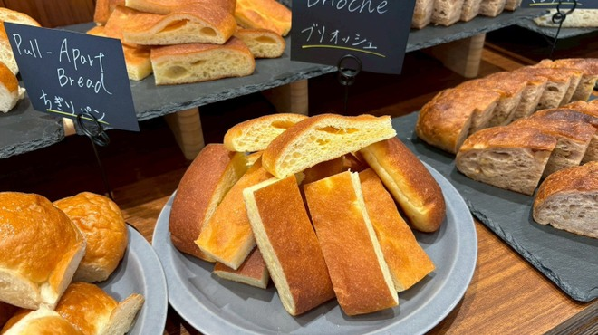

MENU

生ビール／瓶ビール（カールスバーグ）／角ハイボール／ジンジャーハイボール
赤ワイン／白ワイン／スプリッツァー／カシスウーロン／カシスオレンジ
レモンサワー／ライムサワー
オールフリー／ジンジャーエール
ランチブッフェに含まれるドリンク：コーヒー（ホット・アイス）／ウーロン茶／牛乳／ハーブティー／フルーツジュース
アルコール・単品ドリンクは別料金です。価格は店内メニューでご確認ください。
お料理メニューへ戻る ↗